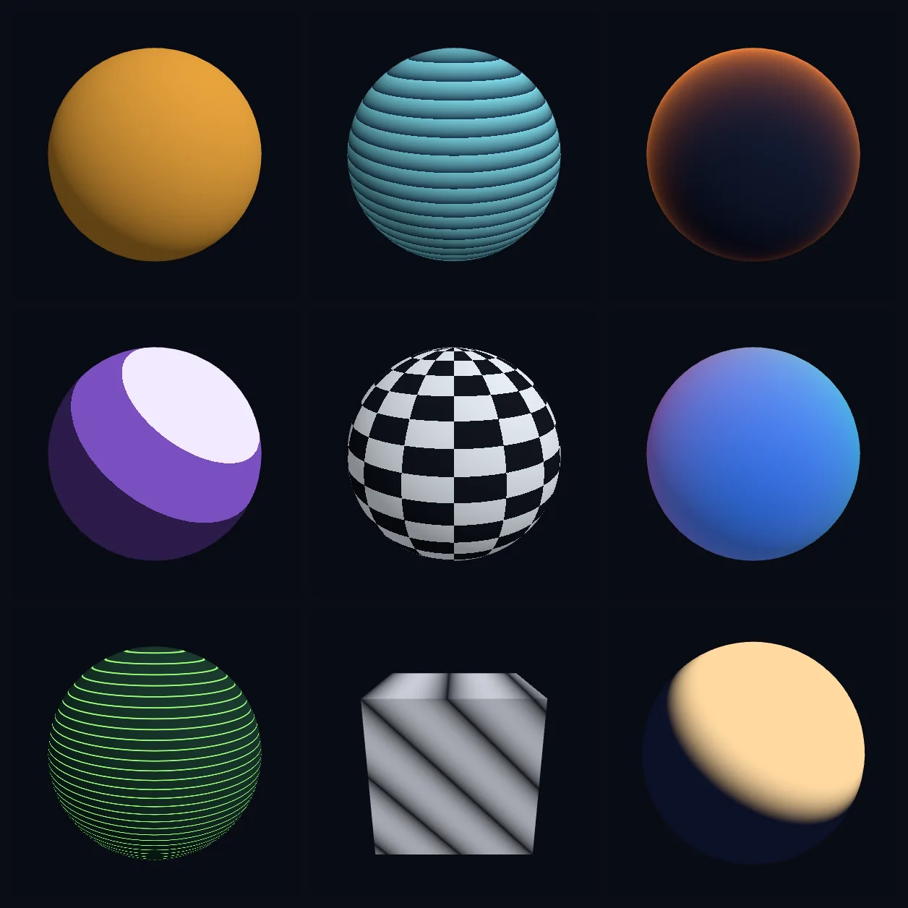

The GPU area of Softanza is the use of the graphics card (the GPU) for calculation. The GPU is used only where a measurement shows that it is faster, and the CPU path always remains the reference answer. Every other statement about this area follows from that rule.
The device layer is wgpu, included in the sources. Kernels, the small programs that run on the GPU, are compiled from text at run time, and the same kernels reach a browser byte for byte. Data stays resident on the GPU: you upload once, chain several kernels and read back once, because moving data costs more than computing on it. Computing and rendering share one device with no copy between them, which neither three.js (render only) nor taichi (compute only) offers. A kernel can be described instead of written: stzKernelMaker turns the line @C = alpha * @A + @B into complete WGSL, the GPU shader language, that you can read before anything runs, and it needs no GPU device to do it. The example below describes a kernel with two vectors A and B, a number alpha and a result vector C. It checks that the generated WGSL contains the line that computes alpha times A plus B, and that its first binding, numbered 0, is the one that every kernel has in common.
oK = StzKernelMakerQ()
oK {
TakesVector(:A)
TakesVector(:B)
TakesScalar(:alpha)
ReturnsVector(:C)
ForEachElement('{ @C = alpha * @A + @B }')
}
# a kernel is authored and transpiled with no device at all
? StzFindFirst("v_c[i] = p.s_alpha * v_a[i] + v_b[i];", oK.ToWGSL()) > 0
#--> TRUE
# and every kernel binds the same contract, the tile first
? StzFindFirst("@binding(0)", oK.ToWGSL()) > 0
#--> TRUE
run in the library on 2026-10-20
The distinctive part is the foundry, which tests GPU variants of an operation. A checker runs the reference and the candidate on the same device at a visible shape and a hidden shape, times them on two clocks, and refuses, by name, any result faster than the hardware allows. Variants are proposed by a plain loop, not by a model, and the winner for each shape is stored. Real consumers go through it and are checked against a CPU fallback that gives identical bits: t-SNE and UMAP (methods that project data to two dimensions) run five to eight times and up to sixteen times faster, k-means six times, and exact vector search eighteen times. The laptop card goes to sleep after ten seconds of idle time, so every test wakes it first. This is also measured.
What is refused is refused by decision, with the number that decided it. Double precision stays on the CPU because consumer cards run it at one sixty-fourth of their normal speed. Element-by-element work was dropped because transfer was 92% of its cost. Using several GPUs is a choice of which card to use, and not a way to run one task in parallel on several cards. Five lanes (sub-areas) are rated Strong and four Solid. What is still owed is a broader kernel language and the residency of a whole pipeline on the GPU. Use the CPU path for double precision.

nine materials rendered by the GPU foundry. rendered by the library's guard gg5_gallery and committed with it at 0e72e2e2c as gg5_gallery.png · the source(opens in a new tab)
Where it stands
The Softanza Compass's reading: every lane of the area rated against the best of its category, by what the guards prove. Read from the source on 2026-09-16, from a read-only main worktree. The Compass's sentences are in English, as it wrote them.
An in-house wgpu plane that does what neither three.js (render-only) nor taichi (compute-only) does: compute and render on one device, zero-copy. Its distinctive core is a self-tuning foundry — a checker that refuses physically-impossible kernel times, shape-keyed CPU-vs-GPU routing measured and persisted, and a winning-kernel table per shape. Real consumers are accelerated and verified: t-SNE 5–8×, UMAP up to 16×, k-means 6×, neural forward 5×, exact vector search 18× — always with a bit-identical CPU fallback. It runs in the browser too (byte-identical WGSL native vs WASM). What it refuses by measured decision — f64 on GPU, multi-GPU, deep 3D — are scope boundaries, not oversights.
The honesty line on the ratings. Re-surveyed from main (the session's working branch was stale). The plane is heavily guarded — ~24 narrated guards — but CI has no GPU: the fallback path is the CI coverage, and the device scenes run only on the dev machine (RTX 3050 Laptop), so GPU correctness is proven on one adapter and calibration is per-adapter. The trust anchor is the checker (GK0), which is guarded to catch answers-without-reading-input, constant offsets, and physically-impossible times. Two plan-vs-code divergences are recorded: no CPU rasterizer despite a plan mention (SVG is the floor), and a fixture checked in as an expectation.
The one-sentence position. Softanza's GPU isn't trying to be three.js or taichi — it is a governed compute-and-render device with a self-tuning, self-checking foundry, where every GPU route is measured, verified, and reversible to CPU; its remaining distance is expressiveness (open kernels), 3D depth, and the f64/multi-GPU frontiers it refuses on purpose until a workload earns them.
What a crafter does with it, and what stands out
a self-tuning, self-checking calibration foundry: category-of-one
compute and render zero-copy on one device
every GPU route measured, verified, and reversible to CPU
byte-identical WGSL native vs browser
What is owed
broaden the kernel transpiler beyond elementwise
whole-pipeline GPU residency
idle-aware routing (GK1b)
deeper 3D rendering
Rethought from first principles
What Softanza kept from what works, and what it rethought, as the library wrote it down in its design documents and narrations.
The Softanza wayThe GPU is used only where a measurement shows it wins, and the CPU path always remains the reference answer.
Kept from the best practice
One lightweight, proven library is built in: wgpu-native (WebGPU). Kernels compile from text at run time, and the same kernels also run in a browser. source(opens in a new tab)
Data stays on the device: upload once, chain several kernels, read back once, because moving data costs more than computing on it. source(opens in a new tab)
Every GPU operation ships with a parity check against the CPU result, within a tolerance set from measurement. source(opens in a new tab)
Rethought
Exact double-precision work stays on the CPU by decision. The GPU serves only domains that tolerate single precision, because consumer cards run doubles 32 to 64 times slower. source(opens in a new tab)
Each route to the GPU must win a measurement first, with kill criteria written in advance. Standalone element-by-element operations were dropped because data transfer was 92% of their cost. source(opens in a new tab)
GPU compute is described, not hand-written. stzKernelMaker turns a short formula into a kernel, making it approachable the way the regex maker did for patterns. source(opens in a new tab)
Kernel variants are proposed by a plain loop, not a language model, since the search space is small. An engine checker verifies each one and refuses impossible speeds. source(opens in a new tab)
The Softanza way, run
What Softanza does differently in this area, shown by code taken from its narrations and guards, and run for this page.
A one-line formula becomes a GPU kernel; writing it needs no device, and the generated code can be read before anything runs.
For every lane: what runs in the engine today, the tools it is fair to measure it against, and what is still owed.
01The calibration foundryStrong
In the engine
The distinctive core (gpu_verify.zig, gpu_foundry.zig): a checker that runs reference vs candidate on the same device at a visible and a hidden shape, times on two clocks, and refuses by name any time under a measured roofline; a shape-keyed store (adapter, op, n-class, d-class) that persists the winning kernel variant and the CPU-vs-GPU crossover.
Measured against
taichi (autotune)ML-compiler autotuners(no direct peer)
To complete
A self-tuning GPU foundry with a self-checking committer — a test-only "broken" variant is refused in every foundry — is something no mainstream GPU library ships. The one clear category-of-one lane.
02Device & runtime (wgpu)Strong
In the engine
gpu.zig over vendored wgpu-native v29 (DX12 / Vulkan / Metal / WASM): generation-keyed handles, bounded VRAM cache, WGSL compile-cache keyed by kernel text, TDR-safe tiling, batched passes, async dispatch, and live instruments (gpu.dispatch.ms, gpu.fallback.count).
Measured against
wgpu (raw)DawnWebGPU
To complete
A managed, instrumented, crash-safe device layer over raw wgpu — more than the bare API gives you. At parity for the runtime it targets.
03Compute kernelsStrong
In the engine
A real WGSL kernel library: matmul (tiled + register-blocked variants), pairdist, softmax, reductions (sum/dot), axpby/mul/scale, FFT convolution (Stockham radix-2), and fused multi-head attention — each with kernel variants the foundry selects between.
Measured against
taichiwgpu computecuBLAS / cuDNN
To complete
A curated fast set (incl. FFT and attention) rather than a general kernel zoo. Broadening it is the transpiler's job (lane 6), not more hand-written shaders.
04Compute + render on one deviceStrong
In the engine
Compute and render compile into one DLL sharing one device: instanced 2D display list (gpu_scene.zig, GPU + SVG backends), HarfBuzz text (gpu_text.zig), texture atlas, and 3D meshes drawn as a single instanced draw (gpu_scene3d.zig) — with compute→render proven zero-copy.
Measured against
three.js (render only)taichi (compute only)regl
To complete
Neither category leader composes compute and render on one zero-copy device — three.js can't compute, taichi can't render, raw wgpu makes you build it. The 3D feature depth is the gap (lane 12).
05Acceleration seams (GS)Strong
In the engine
Real consumers routed to GPU and verified: t-SNE (tsne_gpu.zig) 5–8×, UMAP (umap_gpu.zig) 9.8–16.5×, k-means (kmeans_gpu.zig) up to 6.1×, semantic index 2–2.5×, neural backbone 5.3×, exact vector search 17.9× — each with a bit-identical CPU fallback (k-means decides ties in f64 on CPU: max Δ=0).
Measured against
RAPIDS / cuMLtaichicuGraph
To complete
Measured, verified acceleration of the library's own ML/analytics — not a benchmark, a shipped route with a correctness guarantee. Coverage is per-op; whole-pipeline residency is the reach (Tier A).
06W-string → WGSL transpilerSolid
In the engine
gpu_wgsl.zig turns a declarative kernel spec (stzKernelMaker: TakesVector / ReturnsVector / ForEachElement + a W-string body) into complete elementwise WGSL — f32-only, a 20-function whitelist, refusing unknown functions by name, zero-allocation so it also compiles into the browser WASM.
Measured against
taichi (Python DSL)TritonCUDA C++
To complete
Elementwise-only — one assignment @out = expr, no loops or reductions. taichi and Triton let users write arbitrary kernels; this authors the simple ones and leaves the hard kernels hand-written.
07Browser / WebGPU edge tierSolid
In the engine
The transpiler compiles into stz.wasm as the gpu capability group, so the same spec authors a kernel in the browser. Proven: same spec → byte-identical WGSL native vs browser → f32-exact equal results (test/gpu/edge_proof, 5/5).
Measured against
three.js (web)wgpu WASMTensorFlow.js
To complete
Genuine native/browser parity, but the edge tier runs the transpiler's elementwise kernels — the full op library (matmul, FFT, attention) is not yet exposed in the browser.
08Residency & buffer modelSolid
In the engine
The design axiom: upload once → run N kernels → read once. Every op takes and returns device-buffer handles (stzGpuBuffer), a bounded FIFO VRAM cache manages residency, and compute+render share buffers on the one device.
Measured against
taichi fieldswgpu buffersCUDA memory
To complete
A clean residency model that makes chains cheap — but single-device, and eviction is FIFO rather than usage-aware. No device-to-device transfer (a wgpu limitation, and the reason multi-GPU is out of scope).
09Idle / power managementSolid
In the engine
A real answer to a real hazard: a power-gated laptop dGPU sleeps after ~10 s idle (a 32 MB copy drops from 85 to 13 GB/s). stz_gpu_wake(cap_ms) (Wake(400)) does adaptive copies until one runs at full speed, then stops; every guard and calibration wakes the device before timing.
Measured against
(GPU-runtime power quirks)CUDA persistence mode
To complete
Idle-aware routing (GK1b) is named, not built — a sporadic caller still pays the ~2 ms wake penalty because routing doesn't yet model the dormant-clock cost of the very next submit.
10Precision — f64 on GPUPartial
In the engine
f32 throughout: the transpiler emits f32 only, and gpu_math.zig is "f32 graphics math, deliberately apart from the f64 solver tier." The f64 linear-algebra (LU/QR/Cholesky/SVD/eigen) stays CPU SIMD.
Measured against
CUDA (f64)OpenCLROCm
To complete
f64 is refused by measured decision — consumer NVIDIA runs it at 1/64 of f32 (the dev 3050). A defensible scope boundary, but a real capability CUDA has; the documented escape hatch is an OpenCL route, not built.
11Multi-GPU / scalingPartial
In the engine
Adapter enumeration, explicit selection of one device, and per-adapter calibration files — "selection, not parallelism." SelectAdapter closes the current device and stales its handles before opening another.
Measured against
CUDA multi-GPUDask-CUDAtaichi
To complete
No two-device parallelism (device state is module globals; wgpu has no device-to-device transfer). Out of scope by choice with a pre-written kill line: a two-adapter pool must beat the faster single adapter by 1.5× or it's refused.
123D render depthPartial
In the engine
3D ships: a camera, one directional light, and instanced meshes drawn in a single instanced call (gpu_scene3d.zig, gpu_mesh.zig).
Measured against
three.jsBabylon.jsBevy
To complete
Minimal next to a real 3D engine: no PBR materials, shadows, post-processing, or a deep scene graph. 3D here is a companion to compute, not a game/vis engine — the depth is the gap.
What is owed, in the order of return
The gaps, ordered by what they bring and not by their size; value is the effect on the library's reach, effort an engineer's reading.
Tier A — widen expression & coverage
Broaden the kernel transpiler
Beyond elementwise: loops, reductions and stencils in the W-string→WGSL path, so users author real kernels the way taichi/Triton allow — not just the simple ones. It is the lever that turns a curated kernel set into an open one.
Value · highEffort · high
Whole-pipeline GPU residency
Chain multiple GPU consumers (e.g. embed → knn → cluster) on one resident buffer set rather than per-op round trips. The residency model exists; extending the foundry to multi-kernel pipelines compounds the measured wins.
Value · highEffort · medium
Tier B — finish the named seams
Idle-aware routing (GK1b)
Model the ~2 ms sleeping-GPU penalty in the router so a sporadic caller isn't charged a cold submit it can't amortize. Small, and it removes the one place the otherwise-excellent routing misjudges.
Value · mediumEffort · low
Complete GK2b elementwise + GS1b
The matmul foundry's elementwise half (named, no caller yet) and the sound-desk FFT pointer route — the two named-not-built seams that round out the foundry and the FFT consumer story.
Value · mediumEffort · low
A device-free raster floor
PNG currently needs a GPU device (SVG is the deviceless floor), and the plan mentions a CPU rasterizer that does not exist. Either write it or formally accept SVG-only when headless — a documented divergence worth closing.
Value · mediumEffort · medium
Tier C — depth & deliberate scope
Deeper 3D rendering
PBR materials, shadows, post-processing and a scene graph — the three.js/Babylon feature set. It would turn the compute-companion 3D into a real visualization/game render path.
Value · mediumEffort · high
Multi-GPU pool (GX0)
An adapter pool with host partition/merge — deliberately out of scope until a machine with ≥2 discrete adapters and a partitionable workload asks, and it must clear a pre-written 1.5× kill line. A revisit-on-demand item, not an oversight.
Value · mediumEffort · high
An f64 GPU route (OpenCL)
For the domains that truly need double precision on device, the documented runner-up (an OpenCL path) rather than WGSL. Low priority — the f64 solver tier is fast on CPU SIMD and refuses GPU by measurement.
Value · lowEffort · high
The design, as the library wrote it (1)
The design documents of this area, read in the repository at commit 4a184e6f0: what each one is, its outline, and the link to the whole text.
SOFTANZA GPU PLAN — analysis and phased plan (G0–G6)
2,546 lines · 36 sections · written on 2026-08-07, revised on 2026-09-11
The GPU plane's plan of record (G0 to G6, all shipped): vendor wgpu-native because WGSL compiles from text at runtime and the same kernels reach the browser, measure where the GPU does not pay, and later add the kernel foundry and silent seams.
The outline
0. The two facts that shape everything
1. The vendor decision
2. Architecture — the house laws, applied to a GPU
3. Phases
4. Risks, named now
G0 RESULTS — measured 2026-08-07. VERDICT: GO, with the scope the numbers dictate
G1 STATUS — shipped 2026-08-07: stz_gpu.dll, the lifecycle layer